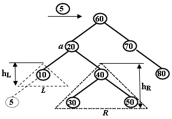
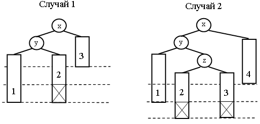
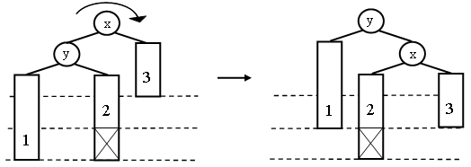
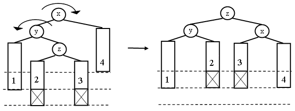
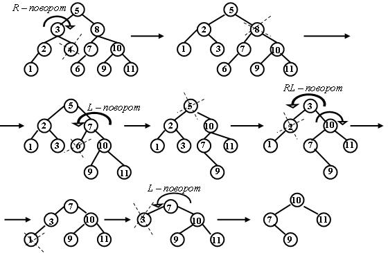

|
|
|
|
|
Включение нового элемента в AVL - дерево Удаление элемента из AVL - дерева
Структура сбалансированного дерева была предложена Адельсоном-Вельским и Ландисом в 1962 году [5]. Дается следующее определение сбалансированности дерева. Дерево является сбалансированным тогда и только тогда, когда для каждого узла высота его двух поддеревьев различается не более чем на 1. Для контроля сбалансированности узлов в структуру каждого узла введён критерий сбалансированности bal = hR - hL , где hL и hR – высота левого и правого поддеревьев узла. Узел сбалансирован, если значение bal равно –1, 0 или +1. Операции вставки и удаления элементов могут привести к изменению высот поддеревьев в узлах, лежащих на пути к вставленному или удалённому элементу. После вставки или удаления элемента выполняется восходящая проверка и корректировка критериев сбалансированности всех узлов, лежащих на пути операции. Если в результате корректировки критерия значение bal в узле становится равным –2 или +2, то выполняется балансировка разбалансированного узла. Балансировка заключается в выполнении поворота узла для выравнивания высот поддеревьев. В AVL-дереве используются четыре вида поворотов в зависимости о конфигурации поддеревьев узла с нарушенным критерием сбалансированности. Включение нового элемента в AVL - деревоРассмотрим операцию включения в сбалансированное дерево нового узла. Пусть дан узел a с левым и правым поддеревьями L и R. Предположим, что новый узел включается в L, вызывая увеличение его высоты на 1.  Возможны 3 случая после включения: 1. Если hL = hR до включения, то L и R становятся неравной высоты, но критерий сбалансированности не нарушен. 2. Если hL < hR до включения, то L и R становятся равной высоты и сбалансированность даже улучшается. 3. Если hL > hR до включения, то критерий сбалансированности нарушается, и дерево нужно перестраивать.
Рассмотрим случаи нарушения сбалансированности: 
Простые преобразования этих двух структур восстанавливают сбалансированность. В случае 1 достаточно выполнить однократный R - поворот узла x вправо:  В случае 2 выполняется двойной LR - поворот, эквивалентный выполнению двух последовательных поворотов узлов y и x. 
Повороты узла, разбалансированного вправо, выполняются по симметричной схеме и носят названия однократного L-поворота и двойного RL-поворота. В общих чертах процесс включения узла в сбалансированное дерево состоит из трех этапов: 1. Поиск места включения узла в каком-либо листе. 2. Включение нового узла и определение нового показателя сбалансированности в месте включения. 3. Обратный проход по пути включения и проверка сбалансированности у каждого узла на этом пути. Алгоритм вставки элемента в AVL-деревоAVL_Insert( t, k, data, h, inserted )
1.
2.
3.
4.
5.
6. if1 t = nil 7. then1 t ← Create_Node(k, data) 8. bal [ t ] ← 0 9. h ← TRUE 10. inserted ← TRUE 11. return t 12. h ← FALSE 13. if2 k = key [ t ] 14. then2 inserted ← FALSE 15. return t 16. if3 k < key[ t ] 17. then3 left [ t ] ← AVL_Insert(left [ t ] k, data, hh, ins) 18. if4 hh = TRUE
19.
then4 20. if5 bal [ t ] = 1 21. then5 bal [ t ] ← 0 22. else5 if6 bal [ t ] = 0 23. then6 bal [ t ]← -1 24. h ← TRUE
25.
26. else6 if7 bal[left [ t ]] = -1 27. then7 t ← R ( t ) 28. else7 t ← LR ( t ) 29. else3 right [ t ] ← AVL_Insert(right [ t ], k, data, hh, ins) 30. if8 hh = TRUE
31.
then8
32. if9 bal [ t ] = -1 33. then9 bal [ t ] ← 0 34. else9 if10 bal [ t ] = 0 35. then10 bal [ t ] ← 1 36. h ← TRUE
37.
38. else10 if11 bal[right [ t ]] = 1 39. then11 t ← L ( t ) 40. else11 t ← RL ( t ) 41. inserted ← ins 42. return t
Алгоритм R - поворота узла t:R ( t ) 1. x← left [ t ] 2. left [ t ] ← right[x] 3. right[x] ← t 4. if bal[x] = -1 5. then bal [ t ] ← bal[x] ← 0 6. else bal [ t ] ← -1 7. bal[x] ← 1 8. return x
Алгоритм LR - поворота узла t:LR ( t ) 1. x ← left [ t ] 2. y ← right [ x ] 3. right [ x ] ← left [ y ] 4. left [ y ] ← x 5. left [ t ] ← right [ y ] 6. right [ y ] ← t 7. if bal [ y ] = -1 8. then bal [ t ] ← 1 9. bal [ x ] ← 0 10. if bal [ y ] = 0 11. then bal [ t ] ← bal [x ] ← 0 12. if bal [ y ] = 1 13. then bal [ t ] ← 0 14. bal [ x ] ← -1 15. bal [ y ] ← 0 16. return y Математический анализ этого алгоритма сложен. Эмпирические проверки этого алгоритма показывают, что ожидаемая высота сбалансированного дерева равна h=log2 n+0.25. То есть AVL - деревья ведут себя как идеально сбалансированные полные деревья. Однако, затраты на балансировку AVL - дерева значительны. Балансировка необходима приблизительно 1 раз на два включения и однократный и двукратный повороты равновероятны. Из-за сложности операций балансировки AVL – деревья рекомендуется использовать в случае, если число операций поиска значительно превышает число операций включения и удаления.
Удаление элемента из AVL - дереваПри удалении узлов из AVL – дерева операция балансировки в основном остается такой же, что и при включении и заключается в однократном или двукратном повороте. При этом булевская переменная h, возвращаемая операцией удаления означает уменьшение высоты поддерева. При восходящем пересчете критерия сбалансированности выполняется балансировка тех узлов, у которых критерий стал равным +2 или -2. Балансировка выполняется с помощью тех же L - , R - , RL - и LR - поворотов.

Удаление элементов также имеет стоимость О(log2 n). Но если включение может вызвать один поворот, удаление может потребовать повороты в каждом узле пути поиска при обратном ходе рекурсии. Но эмпирические проверки показали, что если при включении выполняется один поворот на каждые два включения, то при удалении один поворот приходится на 5 удалений. Рекурсивный алгоритм удаления элемента из AVL-дереваAVL_Delete (t, k, h, deleted)
1.
2.
3.
4.
5. h←FALSE 6. if t = nil 7. then deleted ← FALSE 8. return nil 9. if k < key [ t ] 10. then left [ t ] ← AVL_Delete( left [ t ], k, hh, del ) 11. if hh = TRUE 12. then if bal [ t ] = -1 13. then bal [ t ] ← 0; 14. h ← TRUE 15. else if bal [ t ] = 0 16. then bal [ t ] ← 1 17. else if bal[right [ t ]] = 0 18. then t ← L( t ) 19. else h ← TRUE 20. if bal[right [ t ]] = 1 21. then t ← L( t ) 22. else t ← RL( t ) 23. deleted ← del 24. return t 25. if k > key [ t ] 26. then right [ t ] ← AVL_Delete( right [ t ], k, hh, del ) 27. if hh=TRUE 28. then if bal [ t ] = 1 29. then bal [ t ] ← 0; 30. h ← TRUE 31. else if bal [ t ] = 0 32. then bal [ t ] ← -1 33. else if bal[left [ t ]] = 0 34. then t ← R( t ) 35. else h ← TRUE 36 if bal[left [ t ]] = -1 37. then t ← R( t ) 38. else t ← LR( t ) 39. deleted ← del 40. return t
41.
42. deleted ← TRUE 43. if left [ t ] = nil and right [ t ] = nil 44. then Delete_Node ( t ) 45. h ← TRUE 46. return nil 47. if left [ t ]= nil 48. then x ← right [ t ] 49. Delete_Node ( t ) 50. h ← TRUE 51. return x 52. if right [ t ] = nil 53. then x ← left [ t ] 54. Delete_Node ( t ) 55. h ← TRUE 56. return x 57. right [ t ] ← Del (right [ t ], t, hh) 58. if hh = TRUE 59. then if bal [ t ] = 1 60. then bal[t] ← 0 61. h ← TRUE 62. else if bal [ t ] = 0 63. then bal [ t ] ← -1 64. else x ← left [ t ] 65. if bal[x] = 0 66. then t ← R(t) 67. else h ← TRUE 68 if bal[x] = -1 69. then t ← R( t ) 70. else t ← LR( t ) 71. return t
Del( t, t0, h ) 1. h ← FALSE 2. if left [ t ] ≠ nil 3. then left [ t ] ← Del (left [ t ], t0,hh) 4. if hh = TRUE 5. then if bal [ t ] = -1 6. then bal[t] ← 0 7. h ← TRUE 8. else if bal [ t ] = 0 9. then bal [ t ] ← 1 10. else if bal[right [ t ]] = 0 11. then t ← L( t ) 12. else h ← TRUE 13. if bal[right [ t ]] = 1 11. then t ← L( t ) 12. else t ← RL ( t ) 13. return t 14. else key[ t0 ] ← key [ t ] 15. data[ t0 ] ← data [ t ] 16. x ← right [ t ] 17. Delete_Node ( t ) 18. h ← TRUE 19. return x |
|
|